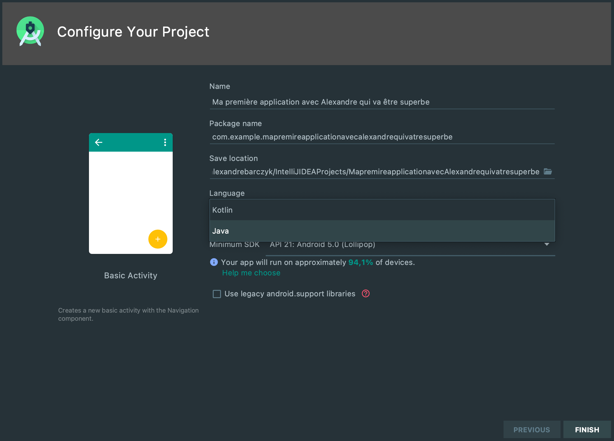
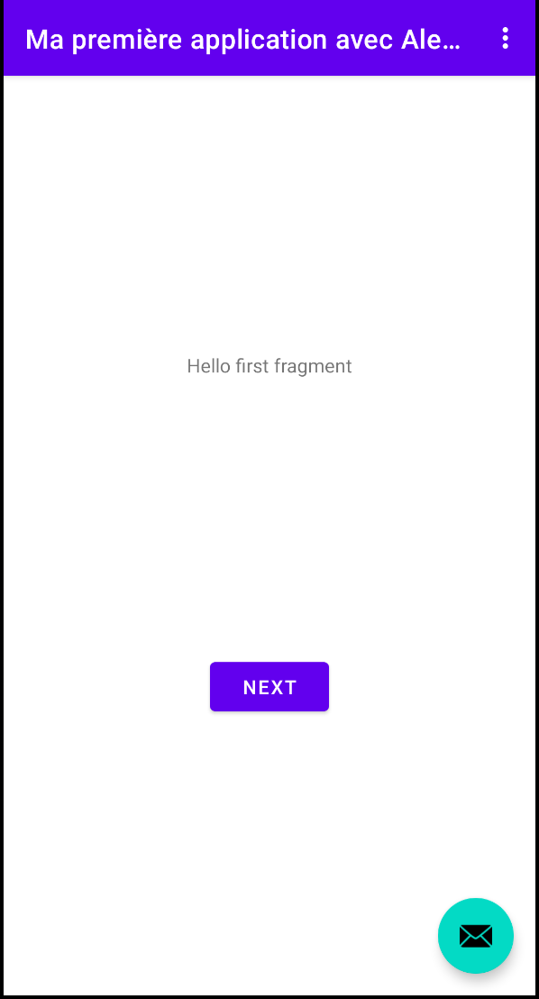
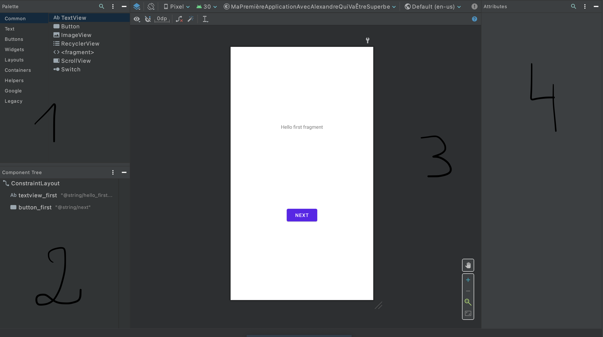
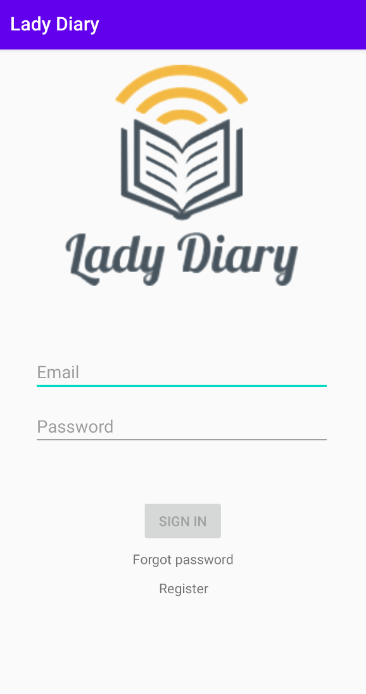
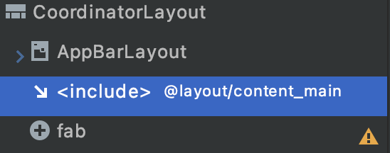
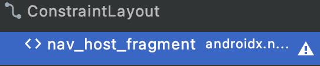
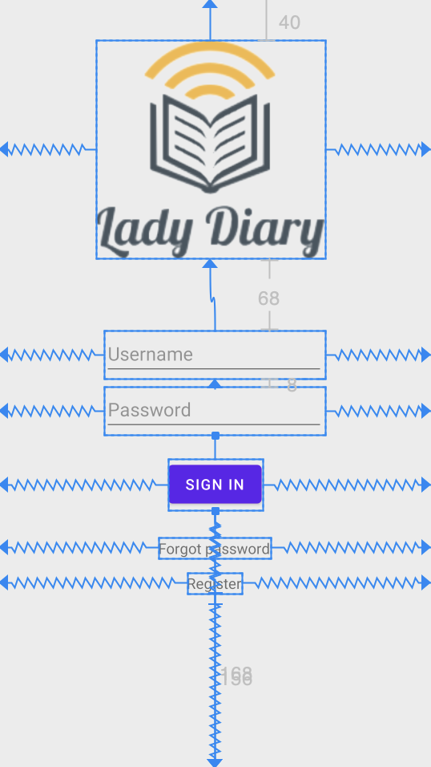
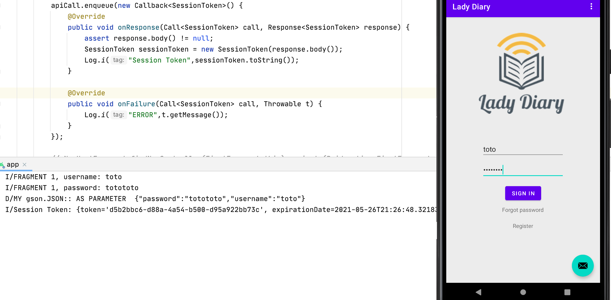

Bienvenue dans ce petit tutoriel sur les applications natives JAVA. J'ai essayé d'être le plus exhaustif possible. Vous allez créer aujourd'hui une superbe application android qui représente un système de connexion. Nous aborderons différents points tout au long de cette merveilleuse expérience. Pour vous donner un peu envie d'aller jusqu'au bout, voici à quoi ressemblera l'application terminée:

Par soucis de bienveillance de ma part, vous avez accès à un repository que voici : Tutoriel JAVA. Il vous sera propos tout au long du tutoriel, au cas ou, de repartir d'une base pour démarrer l'étape suivante. Ces étapes seront identifiées par des TAGS.
Vous pouvez télécharger Android Studio 4.2.1 depuis cette page.
Si vous ne disposez d'aucun JDK, ce n'est pas grave, tout vient avec le téléchargement d'Android Studio.
Voici les quelques étapes que vous serez menés à réaliser:
- Accédez à la page de téléchargement d'Android Studio et suivez les instructions pour télécharger et installer Android Studio.
- Acceptez les configurations par défaut pour toutes les étapes et assurez-vous que tous les composants sont sélectionnés pour l'installation.
- Une fois l'installation terminée, l'assistant de configuration télécharge et installe des composants supplémentaires, y compris le SDK Android. Soyez patient, car ce processus peut prendre un certain temps, selon la vitesse de votre connexion Internet.
- Enfin, Android Studio démarre et vous êtes prêt à créer votre premier projet.
Dans cette étape, vous allez créer un nouveau projet Android pour votre première application. Cette application simple affiche la chaîne "Hello World" sur l'écran d'un appareil virtuel ou physique Android. Pour éviter des potentiels problèmes, nous utiliserons dans ce tutoriel l'appareil émulé par Android Studio.
Ce que vous apprendrez
- Comment créer un projet dans Android Studio.
- Comment créer un appareil Androaid émulé.
- Comment exécuter votre application sur l'émulateur.
Étape 1: Créer un nouveau projet
- Ouvrir Android Studio
- Dans la boîte de dialogue Bienvenue dans Android Studio, cliquez sur Démarrer un nouveau projet Android Studio.
- Sélectionnez Activité de base (pas la valeur par défaut). Cliquez sur Suivant.

- Donnez à votre application un nom tel que Ma première application avec Alexandre qui va être superbe
- Assurez-vous que le langage est défini sur **Java ** (et pas Kotlin).
- Laissez les valeurs par défaut pour les autres champs.
- Cliquez sur Terminer.
Après ces étapes, Android Studio :
- Crée un dossier pour votre projet Android Studio appelé Ma première application avec Alexandre qui va être superbe. C'est généralement dans un dossier appelé AndroidStudioProjects sous votre répertoire personnel (cmd+shift+H sur mac).
- Construit votre projet (cela peut prendre quelques instants). Android Studio utilise Gradle comme système de construction. Vous pouvez suivre la progression de la construction en bas de la fenêtre Android Studio.
- Ouvre l'éditeur de code affichant votre projet.
Étape 2: Créer un périphérique virtuel (émulateur)
Dans cette tâche, vous allez utiliser le gestionnaire d'appareils virtuels Android (AVD) pour créer un appareil virtuel (ou émulateur) qui simule la configuration d'un type particulier d'appareil Android.
La première étape consiste à créer une configuration qui décrit le périphérique virtuel.
- Dans Android Studio, sélectionnez Outils > Gestionnaire AVD, ou cliquez sur l'icône Gestionnaire AVD dans la barre d'outils.
- Cliquez sur +Créer un périphérique virtuel. (Si vous avez déjà créé un périphérique virtuel, la fenêtre affiche tous vos appareils existants et le bouton +Créer un périphérique virtuel se trouve en bas.). La fenêtre Sélectionner du matériel affiche une liste de définitions de périphériques matériels préconfigurées.
- Choisissez une définition d'appareil, telle que Pixel 3a, puis cliquez sur Suivant. (Pour ce tutoriel, peu importe la définition de périphérique que vous choisissez).
- Dans la boîte de dialogue Image système, dans l'onglet Recommandé, choisissez la dernière version. (Cela importe.)
- Si un lien de téléchargement est visible à côté d'une dernière version, il n'est pas encore installé et vous devez d'abord le télécharger. Si nécessaire, cliquez sur le lien pour démarrer le téléchargement, puis cliquez sur Suivant lorsque c'est terminé. Cela peut prendre un certain temps en fonction de la vitesse de votre connexion.
Étape 3 : Exécutez votre application sur votre nouvel émulateur
- Dans Android Studio, sélectionnez Exécuter > Exécuter « application » (^R sur mac) ou cliquez sur l'icône Exécuter dans la barre d'outils . L'icône changera lorsque votre application sera déjà en cours d'exécution .
Si vous obtenez une boîte de dialogue indiquant "L'exécution instantanée nécessite que la plate-forme correspondant à votre appareil cible (Android N...) soit installée", allez-y et cliquez sur Installer et continuez.
- Dans Exécuter > Sélectionner un appareil, sous Appareils disponibles, sélectionnez le périphérique virtuel que vous venez de configurer. Ce menu apparaît également dans la barre d'outils.

L'émulateur démarre et démarre comme un appareil physique. Selon la vitesse de votre ordinateur, cela peut prendre un certain temps. Vous pouvez regarder dans la petite barre d'état horizontale tout en bas d'Android Studio les messages pour voir la progression.

Une fois que votre application est construite et que l'émulateur est prêt, Android Studio télécharge l'application sur l'émulateur et l'exécute. Vous devriez voir votre application comme indiqué dans la capture d'écran suivante.
En règle générale, chaque écran de votre application Android est associé à un ou plusieurs fragments. L'écran unique affichant "Hello first fragment" est créé par un fragment, appelé FirstFragment.
Cela a été généré pour vous lorsque vous avez créé votre nouveau projet. Chaque fragment visible dans une application Android a une disposition qui définit l'interface utilisateur du fragment. Android Studio dispose d'un éditeur de mise en page dans lequel vous pouvez créer et définir des mises en page.
Les mises en page sont définies en XML. L'éditeur de mise en page vous permet de définir et de modifier votre mise en page soit en codant en XML, soit en utilisant l'éditeur visuel interactif.
Chaque élément d'une mise en page est une vue. Dans cette section, vous explorerez certains des panneaux de l'éditeur de mise en page et vous apprendrez à modifier la propriété des vues.
Ce que vous apprendrez
- Comment utiliser l'éditeur de mise en page.
- Comment définir les valeurs des propriétés.
- Comment ajouter/modifier des ressources.
Étape 1 : Ouvrez l'éditeur de mise en page
- Trouvez et ouvrez le dossier de mise en page (app > res > layout) sur le côté gauche dans le panneau Projet.
Les panneaux à droite de la vue Projet comprennent l'éditeur de mise en page. Ils peuvent être disposés différemment dans votre version d'Android Studio, mais la fonction est la même.

Sur la gauche se trouve une palette (1) de vues que vous pouvez ajouter à votre application.
Juste en dessous se trouve une arborescence de composants (2) montrant les vues actuellement dans ce fichier et la façon dont elles sont organisées les unes par rapport aux autres.
Au centre se trouve l'éditeur de conception (3), qui affiche une représentation visuelle de ce à quoi ressemblera le contenu du fichier lorsqu'il sera compilé. Vous pouvez afficher la représentation visuelle, le code XML, ou les deux.
Enfin, sur la droite se trouve la palette d'attributs (4). Cette partie recense toutes les propriétés de l'élément que vous sélectionnez dans l'éditeur de conception.
Étape 2: Définition des propriétés
Vous l'aurez surement déjà remarqué si vous êtes un peu curieux mais on peut voir ce qu'il se passe derrière cet éditeur de conception. Comme dit plus haut, c'est codé en XML. Vous disposez de 3 boutons très utiles que voici :

La vue qui est déjà sélectionnée (Design) est celle que je vous ai présenté dans la partie précédente. La vue Code vous permet d'accéder au code XML et la vue Split vous montre les deux.
On va se concentrer sur la vue Code pour expliquer la définition des propriétés:

Ici on retrouve l'arborescence des composants (ConstraintLayout > (TextView + Button)). Ce qui nous interresse surtout dans cette partie c'est comment modifier par exemple ce que contient le bouton "Next" de la page d'accueil.
Étape 3: Ajout/modification des propriétés
On peut voir ci-dessus le champ android:text="Next" mais ce "Next" est grisé. En fait, c'est Android Studio qui vous montre la valeur de la propriété mais quand on clique dessus on découvre que c'est une adresse vers un autre champ: android:text="@string/next". En faisant un Ctrl + clic (cmd + clic sur mac), on peut accéder à cette adresse et y trouve toutes les variables utilisables en tant que champ "texte".

Pour changer la valeur du boutton il nous suffit donc de changer ce champ : <string name="next">Nouveau Next</string>. On peut également accéder à ce champ d'une deuxieme manière (elle est plus élégante). En passant par le panel des attributs:

Il existe plusieurs fichiers de ce type qui servent à définir d'autres propriétés, ils sont tous dans le dossier res > values :

Ces fichiers servent à renseigner comme vous l'aurez compris des dimensions, des couleurs ou des champs texte.
Voici l'objectif de cette partie :

Ce que vous apprendrez
- Comment ajouter de nouvelles vues à votre mise en page.
Ajouter de nouvelles vues à notre page
Nous allons dans cette partie mettre en place les champs nécessaires à la connexion utilisateur. Énumérons tout d'abord les champs que nous allons devoir ajouter:
- Un champ texte pour le nom utilisateur/email
- Un champ password pour le mot de passe
- Changer le bouton Next en bouton Sign In (normalement ça vous savez déjà faire !)
- Un lien vers un autre composant pour l'inscription et un autre pour la récupération de mot de passe.
- Un magnifique logo pour rendre tout ça un peu plus agréable
Pour bien comprendre l'architecture à laquelle nous avons à faire, voici un petit schéma:

Activity_main : Représente l'application, contient la toolbar (la bande bleue) et le contenu de l'application
Content_main : Contenu le l'application, contient des fragments
First/Second_fragment : Ce sont les vues que nous allons utiliser. Ces fragments peuvent s'apparenter à des widgets.
On peut également imaginer cette architecture assez facilement dans la partie arborescence des composants :
activity_main.xml ==> content_main.xml
=== 
On voit lorsque l'on double clic sur l'include dans activity_main.xml qu'on arrive dans content_main.xml qui lui contient un composant appelé nav_host_fragment, qui lui même héberge les fragments.
Ça ne marche pas vraiment si la réponse est écrite juste en dessous... Mais j'ose espérer que vous avez essayé de répondre sans regarder . On doit donc modifier le fichier fragment_first.xml et y ajouter les champs que l'on a identifié !
Maintenant c'est à vous de jouer ! Je vous laisse trifouiller cette merveilleuse palette de composants pour coller au maximum à l'objectif !
Si vous avez l'âme d'un graphiste en vous, ce que vous venez de créer ressemble à peu près à l'original !
Vous avez peut être également remarqué la présence de ronds sur les 4 coins d'un composant lorsque vous le sélectionnez. Par convention, un composant ne peut pas être "flottant", il faut toujours qu'il soit relié à quelque chose.

Ici, on décide de centrer tous les composants, donc on les relie à gauche et à droite aux bords du fragment. Concernant le rond du haut, j'ai pour habitude de relier à son composant du dessus et pour le bas, la limite du bas du fragment.
Ce que vous apprendrez
- Identifier de manière claire un composant dans une vue
- Récupérer et extraire sa valeur
Identification claire d'un composant
Il est primordial de garder une cohérence de nommage pour les composants, ou de manière générale d'ailleurs. Deux conventions sont très répandues:
- le snake case :
composant_id - le camel case :
composantId
Vous pouvez choisir celle que vous voulez (mais je vous conseille quand même le camel case car on écrit plus vite), le plus important et d'appliquer la même convention partout. J'ai choisi pour ma part le camel case.
Récupérer et extraire les données des composants
Chaque composant d'une vue est caractérisé par un identifiant unique. Ces identifiants sont ensuite chargés dans un contexte accessible depuis la partie JAVA qui est représenté par la variable globale R. Cette variable, qui ne nécessite pas d'import, est la librairie qui contient tous les identifiants, tous les layouts, plus généralement toutes les Ressources de l'application.
Pour accéder à un certain composant, on va donc procéder de la sorte :
final EditText usernameEditText = view.findViewById(R.id.idUsername);
Avant de se ruer sur le code, tentons tout d'abord d'expliquer comment un fragment se comporte avec son contenu.

À la manière du JavaScript, le fragment va placer des "Listener" sur un ou plusieurs de ses composants pour effectuer des actions suivant certaines conditions. Ici on peut constater que le bouton SignIn, retrouvé par son identifiant, va se voir attribuer un Listener qui se déclenchera dès que celui-ci fera l'objet d'un clic. Comme vous pouvez le voir, on peut ajouter autant de listener qu'on peut effectuer d'actions avec le composant, il suffit d'override les méthodes possibles.
Maintenant qu'on voit à peu près comment ça marche, on peut récupérer les champs username et password et les afficher dans notre console pour vérifier que cela fonctionne comme prévu:
final EditText usernameEditText = view.findViewById(R.id.idUsername);
final EditText passwordEditText = view.findViewById(R.id.idPassword);
final Button loginButton = view.findViewById(R.id.idSignIn);
loginButton.setOnClickListener(new View.OnClickListener() {
@Override
public void onClick(View view) {
Log.i("FRAGMENT 1, username :",usernameEditText.getText().toString());
Log.i("FRAGMENT 1, password :",passwordEditText.getText().toString());
// NavHostFragment.findNavController(FirstFragment.this).navigate(R.id.action_FirstFragment_to_SecondFragment);
}
});
Ce que vous apprendrez dans cette partie
- Introduction à Retrofit2
- Contacter et traiter une réponse API
Dans cette partie on va voir comment contacter une API depuis une application android. Il existe diverses solutions mais pour vous éviter de trop longues recherches, et surtout parce que c'est mon travail de vous fournir les outils, nous allons utiliser Retrofit2.
Introduction à Retrofit2
Retrofit2 est un package qui rassemble toutes les méthodes pour pouvoir contacter une API. Il nécessite cependant de créer une sorte d'entité JAVA pour stocker la réponse de l'API.
On va donc commencer par créer cette entité :
public class SessionToken {
private String token;
private LocalDateTime expirationDate;
//...
}
Voici ce que l'API nous répond:
- Un token, qui nous servira par la suite de passe-droit lors d'appels API sécurisés
- Une date d'expiration, car s'il n'y en avait pas... Ce serait la débandade !
Maintenant que nous avons la réponse API sous forme d'entité, nous allons maintenant définir l'appel que nous voulons faire :
public interface AuthAPI {
@GET("ping")
Call<String> ping();
@POST("v1/authentication/login")
@Headers("Content-type: application/json")
Call<SessionToken> loginUser(@Body JsonObject authInput);
//...
}
On définit dans cette classe les méthodes que l'on va potentiellement utiliser:
- ping(): je pense que le nom parle de lui même, cependant, le protocole de communication est précisé avec une directive @GET qui pointera sur l'url "ping".
- loginUser:
- On précise tout d'abord que l'on utilise le protocole POST sur la route
"v1/authentication/login" - On averti l'API que nous discutons en format JSON en ajoutant
"Content-type: application/json"aux HEADERS de la future requête - On précise que ce que l'on envoi est un objet JSON
- On récupèrera un objet Call de SessionToken. Cet Objet nous permettra par la suite de traiter la requête de plusieurs manières. Vous comprendrez par la suite promis.
- On précise tout d'abord que l'on utilise le protocole POST sur la route
Si vous avez bien fait vos devoirs en cours, vous devriez avoir cette arborescence:

On sait ce que l'on manipule et comment on va discuter avec l'API, je pense qu'on est prêt à passer quelques appels.
Contacter et traiter une réponse API
Avant de commencer à coder l'appel API, il faut préciser dans le manifeste de notre application qu'elle peut converser avec l'extérieur:
<manifest xmlns:android="http://schemas.android.com/apk/res/android"
package="com.example.mapremireapplicationavecalexandrequivatresuperbe">
<!-- ... -->
<uses-permission android:name="android.permission.INTERNET" />
<application
//...
android:usesCleartextTraffic="true"
//...
>
<!-- ... -->
</application>
</manifest>
Maintenant que notre application a accès à internet, il nous faut importer cette fameuse librairie Retrofit2. Pour cela, on va l'ajouter à notre gestionnaire de dépendences Gradle :
app/build.gradle
dependencies {
//...
implementation 'com.squareup.retrofit2:retrofit:2.4.0'
implementation 'com.squareup.retrofit2:converter-gson:2.4.0'
implementation 'com.squareup.retrofit2:adapter-rxjava:2.4.0'
//...
}
De retour dans notre fragment 1, on va maintenant faire plus que logger les identifiants !
On doit d'abord instancier un Mapper. Comme son nom l'indique, il sert à transformer (ou "mapper") les objets JAVA en objet JSON et inversement.
Gson gson = new GsonBuilder()
.registerTypeAdapter(LocalDateTime.class, (JsonDeserializer<LocalDateTime>) (json, typeOfT, context) -> LocalDateTime.parse(json.getAsString()))
.setLenient()
.create();
Ensuite on déclare notre fameux objet Retrofit. On y attache notre mapper pour être sûr de traiter les champs de la bonne manière.
Retrofit retrofit = new Retrofit.Builder()
.baseUrl("http://dourlens-monchy.fr:8090/")
.addConverterFactory(GsonConverterFactory.create(gson))
.addCallAdapterFactory(RxJavaCallAdapterFactory.create())
.build();
Nous sommes heureux de pouvoir utiliser ce merveilleux objet qui va nous permettre de discuter avec notre serveur. Il nous faut maintenant instancier la classe recensant les méthodes que nous avons décrites précédemment:
AuthAPI authAPI = retrofit.create(AuthAPI.class);
Map<String, Object> params = new HashMap<>();
params.put("username", usernameEditText.getText().toString());
params.put("password", passwordEditText.getText().toString());
Call<SessionToken> apiCall = authAPI.loginUser(JsonUtils.mapToJSON(params));
Par soucis de généralisation je vous propose cette classe JsonUtils qui vous permet de transformer un type Map<String,Object> en objet JSON. Cela permet dans le cas présent de créer le body de notre requête de login.
public class JsonUtils {
public static JsonObject mapToJSON(Map<String, Object> params) {
JsonObject gsonObject = new JsonObject();
try {
JSONObject jsonObj_ = new JSONObject();
for (Map.Entry<String, Object> entry : params.entrySet()) {
jsonObj_.put(entry.getKey(), entry.getValue());
}
JsonParser jsonParser = new JsonParser();
gsonObject = (JsonObject) jsonParser.parse(jsonObj_.toString());
//print parameter
Log.d("MY gson.JSON: ", "AS PARAMETER " + gsonObject);
} catch (JSONException e) {
e.printStackTrace();
}
return gsonObject;
}
}
Nous sommes désormais en possession d'un objet qui contient notre requête, elle n'est cependant toujours pas lancée. Pour cela, il faut lancer la fonction enqueue.
apiCall.enqueue(new Callback<SessionToken>() {
@Override
public void onResponse(Call<SessionToken> call, Response<SessionToken> response) {
assert response.body() != null;
SessionToken sessionToken = new SessionToken(response.body());
Log.i("Session Token",sessionToken.toString());
}
@Override
public void onFailure(Call<SessionToken> call, Throwable t) {
Log.i("ERROR",t.getMessage());
}
});
Cette fonction nous permet d'interprêter la réponse serveur, peut importe sa nature. Dans un cas de succès, la fonction onResponse sera exécutée, dans la cas contraire onFailure.
La magie apparait lorsque l'on lance l'application et que l'on voit notre token apparaitre !
